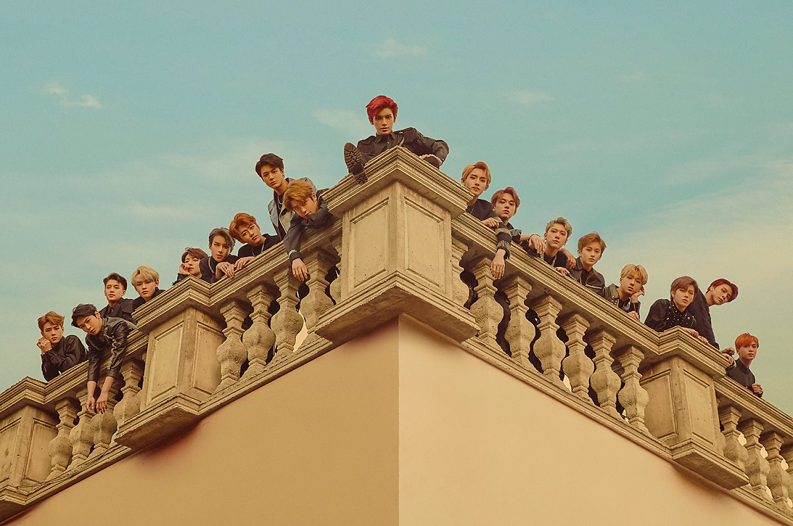

NCT
NCT
NCT U
NCT 127
NCT DREAM
WAY v
NCT?
nct
NCT는
"
네오 컬쳐 테크놀로지
(Neo Culture Technology·新문화기술)
"
의 약자이자 그룹의 이름이다.
NCT는 EDM 레이블 ScreaM, SM STATION과 함께 2016년부터 처음 시도한 SM의 대표적인 시스템이다. 
*NCT(Neo Culture Technology)를 이해하는데 핵심 키워드는 무한 개방, 무한 확장이다.